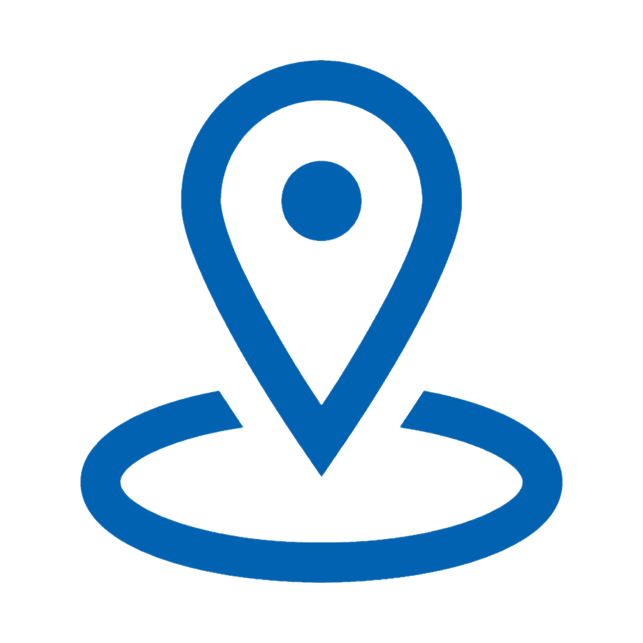

ИНФОРМАЦИОННАЯСТРАНИЦА ЛНТ
Лениногорский нефтяной техникум (ЛНТ) — государственное автономное профессиональное образовательное учреждение в Республике Татарстан. Создан 15 февраля 1958 года.
Адрес: г. Лениногорск, пр. 50 лет Победы, 26.
Телефоны: +7 (85595) 5-15-82, +7 (85595) 5-14-76.
Официальный сайт: lntrt.ru.
Электронная почта: yandex.ru.
Учредитель: Министерство образования и науки Республики Татарстан.
В 2024 году на базе техникума открыт образовательно-производственный центр (кластер) «Профессионалитет» по отрасли «Топливно-энергетический комплекс».

Плюсы учёбы в ЛНТ
💡🚬 I плюс
Участие в проекте «Профессионалитет» обеспечило техникум современными мастерскими и учебным полигоном с действующей нефтяной скважиной для отработки реальных навыков.
💡🚬 II плюс
Более 60% выпускников трудоустраиваются в эту компанию. Занятия ведут действующие специалисты-практики, а дипломная практика часто проходит прямо на производстве.
💡🚬 III плюс
Можно бесплатно получить вторую рабочую профессию (например, электромонтера), а также участвовать в конкурсах профмастерства, спортивных и творческих мероприятиях.
💡🚬 VI плюс
Есть возможность продолжить обучение в профильных вузах-партнерах (АГНИ, КНИТУ) по сокращенным программам, сразу на 2-й курс.
Навигатор
ИИ-помощник поможет абитуриенту подобрать оптимальную специальность на основе его интересов и школьных предметов.
Система тут же покажет, с какими конкретно предприятиями (например, структурами «Татнефти») связана эта профессия и какова вероятность целевого обучения
Консультант
Виртуальный консультант заменит классический раздел «Вопрос-ответ».
Он сможет круглосуточно отвечать на любые вопросы о правилах приема, проходных баллах, сроках подачи документов, общежитии и стипендиях, используя самую актуальную информацию приемной комиссии.
Карьера
 ИИ проанализирует выбранную студентом специальность и предложит индивидуальную траекторию:
ИИ проанализирует выбранную студентом специальность и предложит индивидуальную траекторию:
какие дополнительные рабочие профессии (электромонтер, оператор) можно получить бесплатно во время учебы, а затем подскажет, в какой вуз-партнер (АГНИ, КНИТУ) можно поступить на сокращенную программу после выпуска.
+
Как поступить?
Нужны паспорт, аттестат и 4 фото. Вступительных испытаний нет — конкурс по среднему баллу аттестата. Подать документы можно лично, почтой или онлайн до 15 августа. Оригинал аттестата потребуется уже на этапе зачисления в конце августа. Если нужно общежитие — пишется отдельное заявление до 5 августа
+
Есть общежитие?
Да, для иногородних выделяется 80 мест . При подаче документов нужно написать заявление о нуждаемости (принимаются до 5 августа). Стоимость — 6570 рублей в год для бюджетников . Заселение с 30 августа, но перед этим нужно сделать ремонт в комнате. При заселении потребуются аптечка, справка о хронических заболеваниях и фото
+
Куда дальше?
Выпускники ЛНТ могут продолжить обучение в Альметьевском государственном нефтяном институте (АГНИ) и КНИТУ по сокращённым программам — сразу на 2–3 курс. Лучшие студенты имеют возможность целевого обучения за счёт компании «Татнефть». Также во время учёбы в техникуме можно бесплатно получить дополнительную рабочую профессию (электромонтёр, оператор и другие).
Часто задаваемые вопросы
Ключевые преимущества
информационной страницы ЛНТ
Доcтупность 24/7
ИИ отвечает на вопросы в любое время суток, включая выходные и праздники. Абитуриенты из других городов могут получить консультацию без ожидания ответа от приёмной комиссии.Персонализация
Помощник подбирает информацию под конкретного пользователя: абитуриенту показывает специальности и правила приёма, студенту — график и доп. профессии, родителям — условия проживания и безопасность.Мгновенные ответы
Вместо поиска по разделам сайта пользователь просто задаёт вопрос и сразу получает точный ответ: проходные баллы, сроки подачи документов, стоимость общежития.Никакой лишней информации
ИИ выдаёт только то, что нужно, отсеивая устаревшие или неподходящие данные. Например, на вопрос «Есть общежитие?» сразу скажет количество мест и условия заселения.Помощник в выборе
Система помогает абитуриентам определиться со специальностью на основе их интересов и школьных предметов, показывая перспективы трудоустройства и партнёров (например, «Татнефть»).Разгрузка сотрудников
Приёмная комиссия и другие отделы получают меньше однотипных звонков и писем, так как ИИ берёт на себя большую часть рутинных вопросов. Сотрудники сосредотачиваются на сложных задачах.